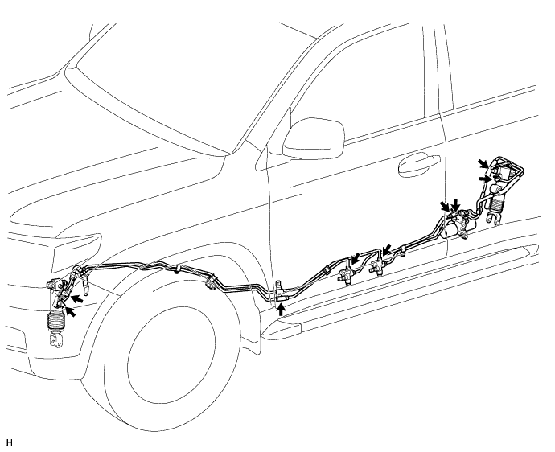

SUSPENSION CONTROL SYSTEM (w/ KDSS) > ON-VEHICLE INSPECTION |
| 1. MEASURE VEHICLE HEIGHT |
Set the tire pressure to the specified value(s) (Click here).
Bounce the vehicle to stabilize the suspension.
 |
Measure the distance from the ground to the top of the bumper and calculate the difference in the vehicle height between left and right. Perform this procedure for both the front and rear wheels.
| 2. VEHICLE TILT CALIBRATION |
Remove the stabilizer control valve protector (Click here).
Using a 5 mm socket hexagon wrench, loosen the lower and upper chamber shutter valves of the stabilizer control with accumulator housing 2.0 to 3.5 turns.

Bounce the vehicle to stabilize the suspension.
Check the difference in height between the left and right sides of the vehicle. Refer to Measure Vehicle Height.
Using a 5 mm socket hexagon wrench, tighten the lower and upper chamber shutter valves of the stabilizer control with accumulator housing.
Install the stabilizer control valve protector (Click here).
| 3. INSPECT FOR SUSPENSION FLUID LEAK |
Perform a driving test.
Check for fluid leakage from the parts and connections.
